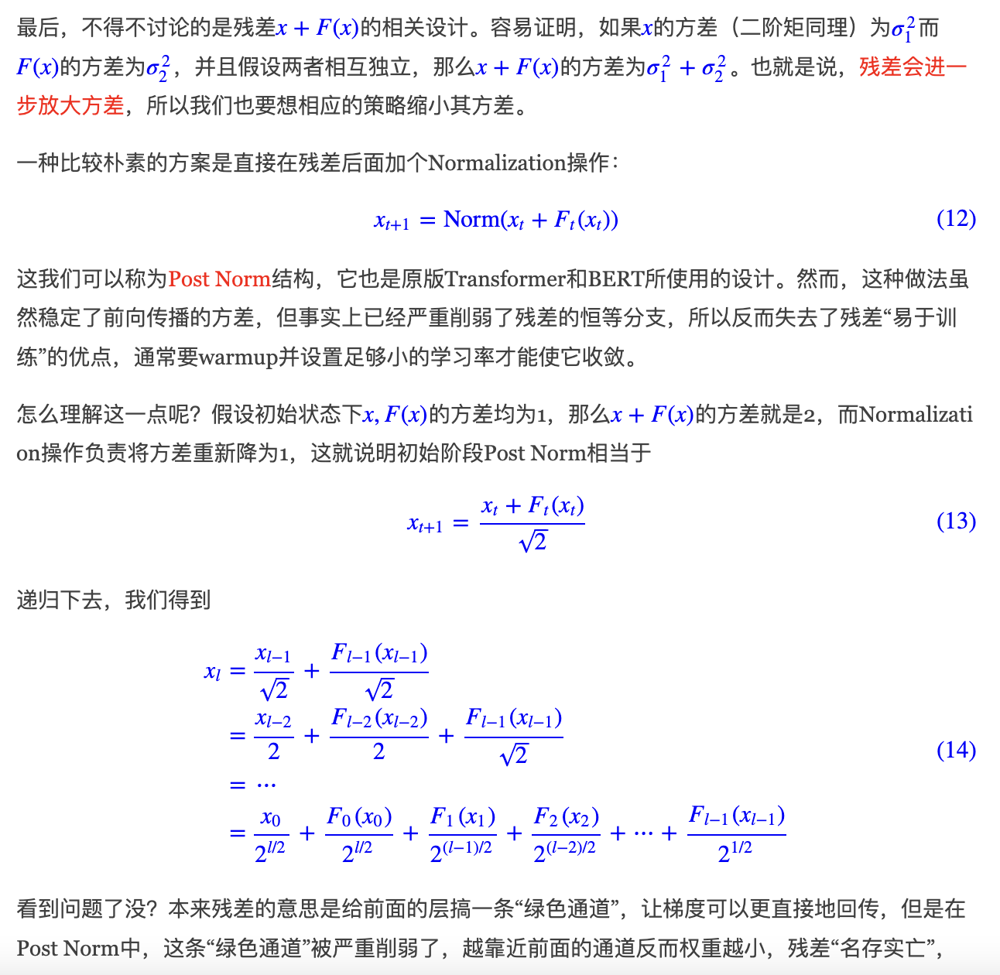
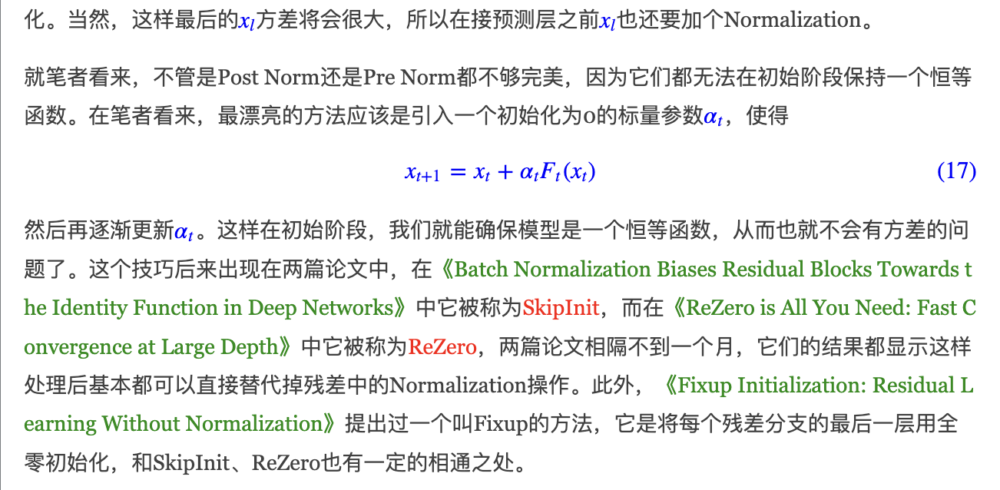
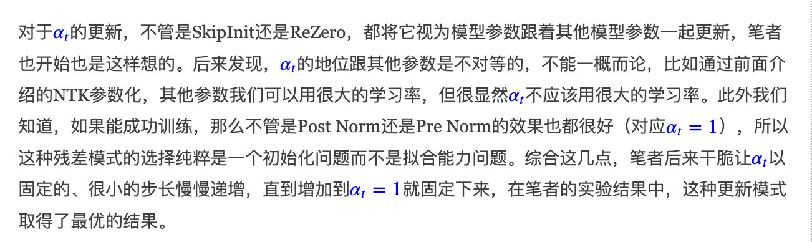
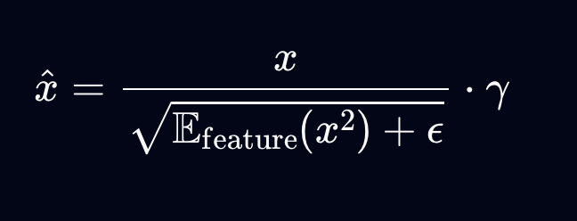
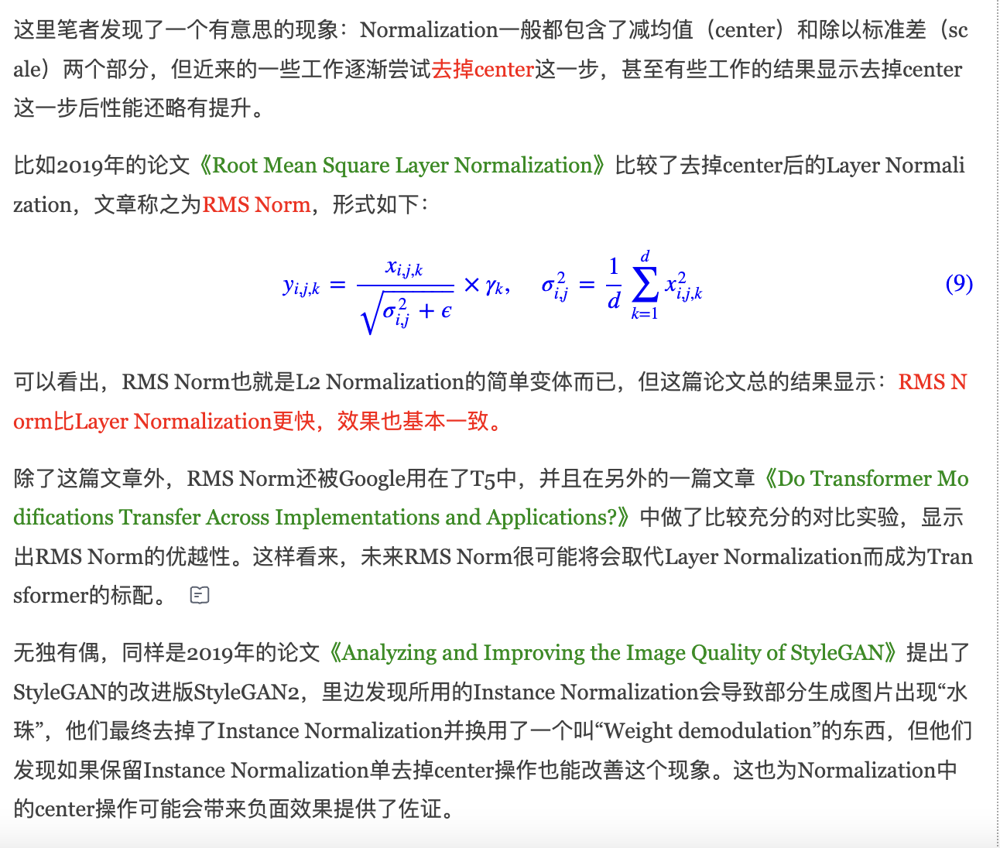
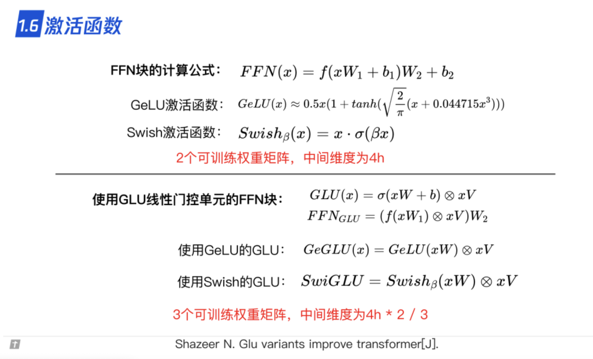
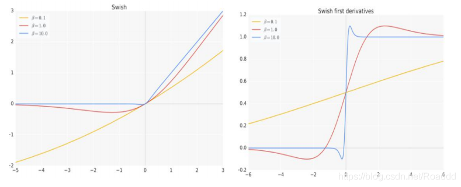
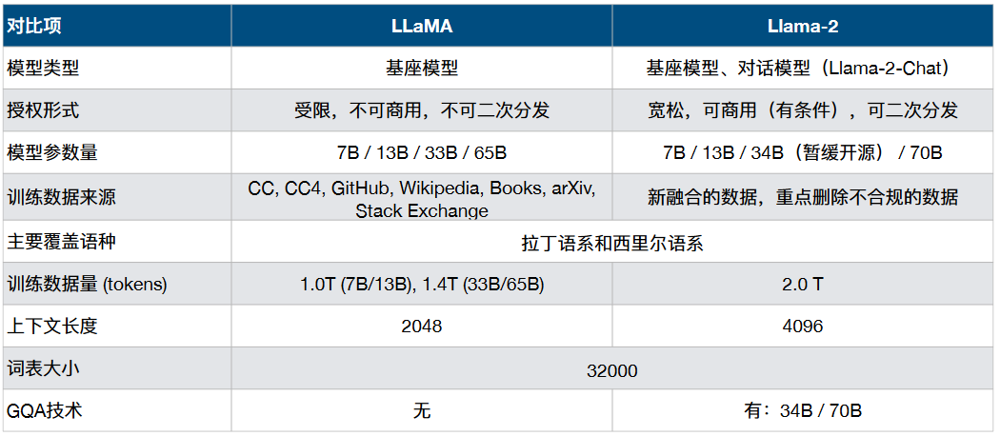
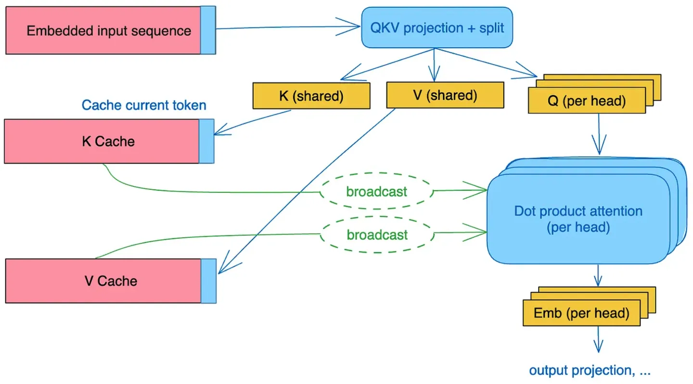

Llama：
因为对于Llama而言，使用的架构是延续GPT的，并且做了一些改进，所以我们主要研究Llama对于GPT的一些改进，以及改进的效果
Llama针对于GPT的改进：
1. 前置 层归一化
大致有三种归一化位置可以选择：
- post Norm：transformer原始结构中的Norm的位置
- pre Norm：将Norm的位置放到模块前面（Llama中使用的Norm方法）
- sandwich Norm：Post Norm和pre Norm的结合
在苏剑林老师的博客中也提到了pre Norm和post Norm各自的优点和缺点：
- post Norm：
优点：
a. 可以更好的维护每层的方差，防止在模型加深时，最后输出的方差过大
b. 利用post Norm训练好的预训练模型利用比pre Norm训练好的模型有更好的finetuning效果
其次，梯度消失也不全是“坏处”，其实对于Finetune阶段来说，它反而是好处。在Finetune的时候，我们通常希望优先调整靠近输出层的参数，不要过度调整靠近输入层的参数，以免严重破坏预训练效果。而梯度消失意味着越靠近输入层，其结果对最终输出的影响越弱，这正好是Finetune时所希望的。所以，预训练好的Post Norm模型，往往比Pre Norm模型有更好的Finetune效果
缺点：
a. 会削弱残差的效果，带来的结果就是会让模型更难训练（所以post Norm一般需要warm up 热启动）

- pre Norm:
优点：
a. 可以改善post Norm出现的问题，让模型更容易训练
缺点：
a. 效果相对于post Norm有略微下降
虽然Post Norm会带来一定的梯度消失问题，但其实它也有其他方面的好处。最明显的是，它稳定了前向传播的数值，并且保持了每个模块的一致性。比如BERT base，我们可以在最后一层接一个Dense来分类，也可以取第6层接一个Dense来分类；但如果你是Pre Norm的话，取出中间层之后，你需要自己接一个LN然后再接Dense，否则越靠后的层方差越大，不利于优化。
补充：
苏剑林老师引出了另外一种效果更好的方法可以代替Normalization的方法：

并且苏剑林老师也提出了经过他的实验发现：
- 其中α的更新不能和其他的参数步调相同，α的更新的幅度应该跟小
- 当α=1时，也就是post Norm或者pre Norm，效果已经很好了
- 最后通过让α从0以很慢的幅度增长到1之后，就维持α=1不变，达到了最优的效果

不同Norm的效果：
两张图分别为每一层中FFN第一层和第二层的系数和
总结：
- post Norm的优缺点：
优点：稳定方差，模型结果相比pre Norm更好，同时finetuning的结果更好
缺点：会削弱残差的效果，当模型深度增加时，残差会指数级减小，不好训练（需要warmup） - pre Norm的优缺点：
优点：释放了残差，缓解了梯度消失的问题，训练的收敛速度提高，更容易训练
缺点：在相同条件下，比post Norm的效果略差（因为模块中的方差变大）
2. RMSNorm归一化函数
层归一化 LayerNorm：

class LayerNorm(nn.Module):
def __init__(
self,
size: int,
eps: float = 1e-5,
):
"""
Layer Normalization.
Assumes the shape of the input x is (batch, seq_len, d_model)
Args:
size: shape of the feature dimention (i.e. d_model)
eps: For numerical stability. Defaults to 1e-5.
"""
super(LayerNorm, self).__init__()
self.eps = eps
self.gamma = nn.Parameter(torch.ones(size),require_grad = True)
self.beta = nn.Parameter(torch.ones(size),require_grad = True)
def forward(x):
x_var, x_mean = torch.var_mean(x, dim = -1, keepdim = True, correction = 0)
x_std = torch.sqrt(x_var + self.eps)
x_norm = (x-x_mean)/x_std
return self.gamma.unsqueeze(0).unsqueeze(1)*x_norm + self.beta.unsqeeze(0).unsqueeze(1)
优点：
- 和batch Norm相比，对于batch_size的敏感度较低
- 稳定训练，加速收敛
- 在序列化模型上的效果更好
均方值归一化 RMSNorm：

相较于layerNorm的改变：
- 使用均方根值
- 删去了分子上减均值的操作
- 去除了添加偏差项
优点：
- 计算更加简单，所以计算效率更高，加速训练
class RMSNorm(nn.Module):
def __init__(
self,
size: int,
eps: float = 1e-5,
):
"""
Root-Mean-Square Layer Normalization.
Assumes the shape of the input x is (batch, seq_len, d_model)
Args:
size: shape of the feature dimention (i.e. d_model)
eps: For numerical stability. Defaults to 1e-5.
"""
super(RMSNorm, self).__init__()
self.eps = eps
self.gamma = nn.Parameter(torch.ones(size), require_grad = True)
def forward(x):
rms = torch.sqrt((x ** 2).mean(dim = -1,keepdim = True) + self.eps)
x_norm = x / rms
return self.gamma.unsqeeze(0).unsqueeze(1) * x_norm

3. SWiGLU激活函数
SwiGLU的结构：Swish + GLU
Swish激活函数：


GLU激活函数：
起到了门控的作用
SwiGLU激活函数
4. 旋转位置编码 RoPE
在旋转位置编码之前的位置编码方式：
-
绝对位置编码
-
相对位置编码
RoPE: 旋转位置编码
主要是利用了复数的思想：
作者发现：
两个二维向量的内积，等于把它们当复数看时，一个复数与另一个复数的共轭的乘积实部。
共轭复数是指一个复数的虚部取负号后得到的复数。假设有一个复数 z = a + bi，其中 a 是实部，b 是虚部，那么它的共轭复数记作 z*，其虚部为 -b，即 z* = a - bi
其中，为位置为m和n的两个向量（attention中的q和k）
代表两个复数相乘
如果将公式转化为复数的形式：
可以看到在公式左边是绝对位置，但是通过复数的乘法之后，右侧变成了相对位置！
对于位置为n的二维实数向量
通过下述方式可以通过添加绝对位置信息的方式，添加相对位置信息。
所以通过上述的论证，我们可以这样理解：
- 最开始的时候对于输入向量乘（叉乘，对应位置相乘）上一个矩阵，添加一个绝对位置。
- 让他在进行attention操作的时候自动包含了相对位置信息
(在llama3中θ的底数为50000)
d：hidden_size（也就是一个头中embedding的维度）
i：表示位置对于RoPE来说位置为[0,2,4,6,8..., dim//2 - 1]（因为向量元素两个为一组组成复数）
并且对于RoPE也是有远程衰减性的
对于位置编码来说
- 在相对距离较小的时候，位置信息是十分重要的，所以需要位置编码的要十分清晰
- 在相对距离较大的时候，位置信息就显得不是那么重要了，所以需要位置编码可以模糊一些
下面的图可以这样理解：
- 在相对距离较小的时候，位置信息表示的非常明确，每一个纵坐标只有一个横坐标对应（清晰）
- 在相对距离较大的时候，位置信息可以表示的比较模糊，所以一个纵坐标就可以有多个横坐标对应（模糊）

Llama2
Llama与Llama2的对比：

我们主要关注一下模型结构上的变化：
其中最重要的点在于GQA：
GQA - Group Query Attention

MHA：Multi Head Attention
MQA：Multi Query Attention
GQA：Group Query Attention
MHA就是我们最熟知的多头注意力机制，但是对于最原始的多头注意力机制，其中，我们需要完整的计算所有的q，k和v的运算，所以我们在推理的时候需要kv_cache进行推理加速。（下面一块有讲到）
MQA可以理解为，在所有阶段所有block的kv都是相同的，其中和MHA不同的点在于：
MQA的Q的计算与MHA相同，先通过矩阵大小变换，变换为多头，再通过线性变换压缩为64
MQA的K和V的计算则是直接利用线性变换，从变为

GQA可以理解为MHA和MQA的结合，实际在源码当中，我们是有n_head和n_kv_head
其中：
n_head对应Q的头数
n_kv_head对应K和V的头数
在进行矩阵运算的时候：
其中key的大小 = value的大小为：[bs, n_local_head, cache_len+seqlen, head_dim]
query的大小为：[bs, n_local_heads, seqlen, head_dim]
所以的大小为：[bs, n_local_heads, seqlen, cache_len+seqlen]
Attention的大小为：[bs, n_local_heads, seqlen, head_dim]
最后输出的大小为：[bs, seqlen, n_local_heads * head_dim]
最后三种attention计算的结果比较：

kv_cache
在推理阶段，我们为了加速推理会使用kv_cache:
我们在通过自回归的进行预测的时候，会涉及到一个叫做KV cache的机制：
我们在进行自回归计算时，attention会涉及到的计算：
当我们要预测第五个字的时候：
我们对比每一行的区别：
- 每一行的q不相同
- 每一行都有k,v而且每次只多出来最后一个k和v
-
针对区别1: 每一行的q不相同
因为我们自回归模型是通过前面的结果预测下一个字，每一行的新q就是前面结果的最后一个字的embedding结果 -
针对区别2: 每一行都有k,v而且每次只多出来最后一个k和v
因为我们的decoder中是mask self attention，所以只能看到当前值的及其之前的结果，所以这个k和v其实是前面所有词的embedding
所以：
如果我们想要得到新的一行，只需要在之前的基础上增加一个当前的k和v，在进行计算
可能文字还是会十分的有歧义。

-
图的左边：
我们可以看到在没有使用kv_cache之前我们是通过每一次增加一行q的形式，通过q和每次都相同的k和v进行计算，最后在softmax之前加上mask的向量（在需要mask的位置设为-∞），达到mask的效果 -
图的右边：
使用了kv_cache之后，我们只需要每次新增的q，以及依次累加（实际上是concat）k和v就可以达到相同的结果
❗️❗️❗️
总结：kv_cache节省的计算量，其实是在进入softmax之前，qk的乘积 和 FFN的计算
❗️❗️❗️
内容来源：
- 主流大语言模型的技术原理细节
- 浅谈Transformer的初始化、参数化与标准化
- 为什么Pre Norm的效果不如Post Norm？
- 模型优化漫谈：BERT的初始标准差为什么是0.02？
- Batch Normalization, Layer Normalization and Root Mean Square Layer Normalization: A Comprehensive Guide with Python Implementations
- 二维向量内外积是一种特殊的复数运算
- 让研究人员绞尽脑汁的Transformer位置编码
- 理解Attention:从起源到MHA,MQA和GQA
- 大模型推理加速：看图学KV Cache
- 分析transformer模型的参数量、计算量、中间激活、KV cache
- 大模型推理性能优化之KV Cache解读
- 2023年的深度学习入门指南(20) - LLaMA 2模型解析